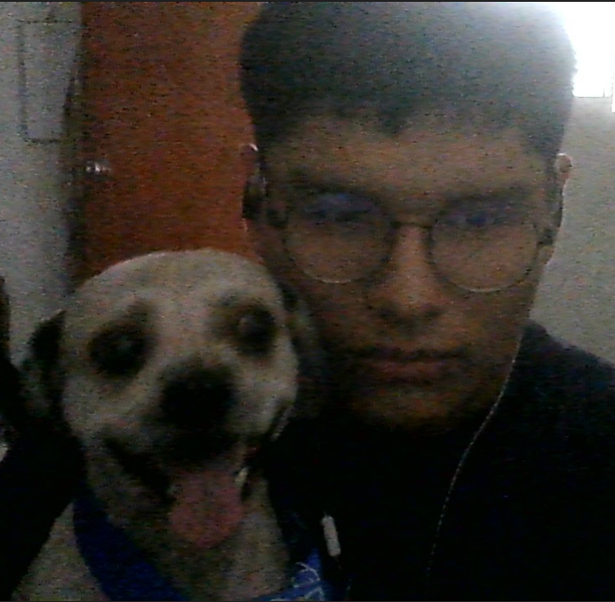

¡Hola! Me llamo Angel, actualmente estoy estudiando la carrera de Ingeniería de Sistemas e Informática en la Universidad Nacional Jorge Basadre Ghromann (UNJBG) de Tacna - Perú. Por ahora me estoy enfocando en mejorar mi inglés y estoy aprendiendo por mi propia cuenta conceptos básicos de FRONT-END. ¡Este es un intento de portafolio web, y a su vez es mi primer sitio web usando las tecnologías de HTML y CSS!
